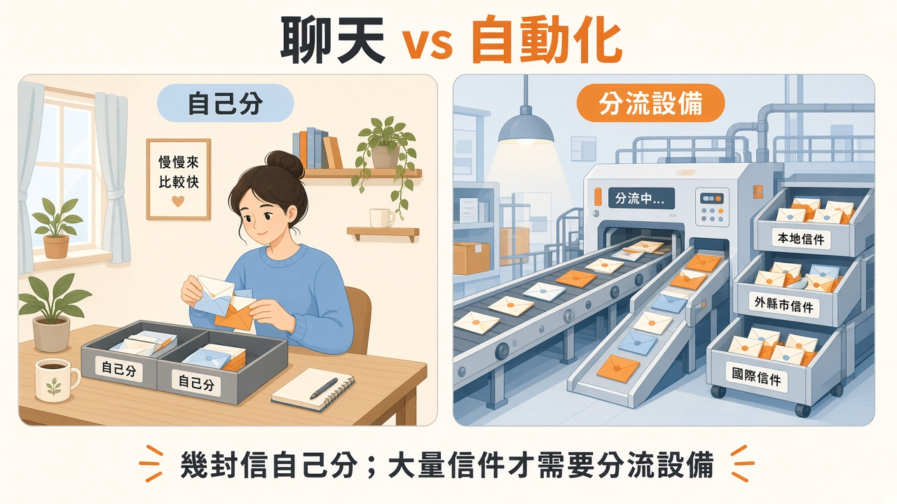
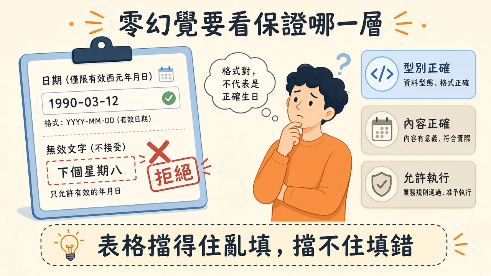

已經在用 ChatGPT、Claude 或 Grok，還要不要再接一個叫 Jev 的服務？它不是來陪你聊天的，比較像自動化程式裡專管分類的元件；分析、寫作仍可交給其他模型。先看懂怎麼分工，再決定多接一個值不值得。
資料查核日期：2026 年 9 月 19 日。依官方文件整理；效能數字為供應商主張，情境與導入建議為編輯延伸，未進行 API 實測。
如果你只是打開 ChatGPT、Claude 或 Grok，請它整理資料、寫文章或協助寫程式，通常不需要特別加入 Jev。本文介紹的是另一種使用情境：你正在建立應用程式，想把其中反覆出現的判斷自動化。
Jev 是 TypeSafe AI 推出的模型。你提供待判讀的資料，以及預先定義的問題與答案型別，它回傳結構化結果，讓程式繼續執行。官方把這類產品稱為 System One Model。它的主要定位是流程中的決策，沒有自由文字生成能力。官方入門文件。
先用熟悉的工具完成任務，無須為了追新模型而改流程。
可以讓程式助理協助撰寫串接程式，實際服務呼叫仍需要設定與驗證。
可評估把分類或分派步驟交給 Jev，再讓既有模型處理分析與回覆。
金額計算、必填欄位檢查等明確規則，通常直接用程式處理即可。
每天寄幾封信，自己分就好；經營每天處理大量信件的收發室，才可能需要專門的分流設備——工具要對上流量，不是對上時髦。

插圖：白話科技編輯繪製／AI 輔助，非新聞照片
API 可以理解成「讓程式向服務提出請求的接口」。本文的搭配方式，是你的程式先呼叫 Jev，取得分類結果，再依規則呼叫你選用的 OpenAI、Claude 或 Grok 模型 API。通常選一個適合的文字模型即可，無須把三家都接上。
這套示意架構需要你建立串接流程；在聊天視窗輸入「幫我用 Jev」，不會自動建立它。使用聊天產品與開發 API 服務是不同操作；要另外確認服務存取權、憑證、用量計費與資料處理條件，不要假設聊天訂閱已包含所有 API 呼叫。
想像收到「已付款卻無法登入」的工單：Jev 協助判斷類型，你的程式查詢必要的訂單資料，再交給文字模型草擬回覆，最後依流程安排覆核。工具呼叫、權限與失敗接手仍由系統設計負責。
兩家外包公司各有專長，仍需要窗口傳遞資料、交代工作、檢查交付。你的程式就是這個協調窗口；專長可以外包，窗口丟了，流程就散了。
插圖：白話科技編輯繪製／AI 輔助，非新聞照片
官方提供三種問題：Choice 從指定選項中挑選；Score 依你定義的等級評分；Noul 回傳某個敘述成立的機率，介於 0 與 1。Choice 與 Score 還會帶回機率分布與 confidence；Noul 沒有獨立的 confidence 欄位。問題型別文件。
用工單來看，Choice 可以問「帳務、登入、功能操作或其他，哪一類最合適？」Score 可以評估影響程度，但必須說清楚每個等級代表什麼；Noul 可以問「這段文字是否明確要求退款？」
一個是否題得到 0.5，不能解釋為「程度中等」。它可能表示系統對是或否難以判斷。把問題型別選對，結果才有清楚的業務意義。
問「今天有沒有下雨」與「今天雨量多大」，需要不同的答案欄位。是非題再自信，也不能直接拿來當雨量計。
官方建議一次問一個範圍清楚的判斷。同一請求可包含多個問題，各自對同一份資料獨立評估；需要前一題答案的後續判斷，則應由程式另行安排。官方入門文件。
例如先分別判斷問題類型、是否缺少資料與影響範圍，再由明確規則決定下一步。分類選項也應容納「其他」或無法歸類的情況。否則資料不合適時，系統仍可能在錯誤的選項集合裡選出一個答案。
這裡的工程取捨是：你少寫了一些辨識自然語言的規則，但仍要維護問題定義與決策邏輯。當業務改變，這些部分也要跟著更新。
報修單先分開記錄設備、故障現象與影響人數，派工規則才容易修改。把所有事情塞成一句「請妥善處理」，反而難以驗收。
Jev 的 confidence 是由機率分布計算出的摘要指標。選項集中在一個答案，與分散在多個答案，代表不同的確定程度；不能直接把 confidence 0.9 解讀為這題有九成機率答對。信心指標文件。
校準則是另一個需要用資料檢查的概念：例如一批被預測為約八成機率成立的事件，實際發生比例是否也接近八成。這是整批預測的統計性質，並非對每筆資料的保證。
本文建議先用已知結果的工單，觀察不同分數區間的錯誤，再選擇哪些可以自動分派、哪些需要補問或覆核。還要檢查特殊語言、資料缺漏與新類型，不只看整體平均。
天氣預報的八成降雨機率，要靠許多次預報和實際天氣對照才能評估，不能只拿今天有沒有下雨判定。
官方把零幻覺的主張連到輸出型別與結構限制，並說明相關零值來自結構保證，而非逐筆實驗都答對。這不能延伸為「內容判斷永遠正確」。官方發布說明。
如果只能從帳務與登入兩個選項挑答案，系統不會憑空創造第三個部門，卻仍可能把帳務案件分到登入組。型別正確、內容正確、允許執行，是三個不同層次。
即使模型很確定，權限與業務規則仍由程式執行。例如判斷客戶要求退款，不等於客戶符合退款條件，更不等於可以略過身分確認。
表格只允許填合法日期，可以防止填入「下個星期八」，卻無法保證填的是正確生日——格式過關，不代表故事過關。

插圖：白話科技編輯繪製／AI 輔助，非新聞照片
Vercel 的整合公告轉述 TypeSafe 評測主張：特定流程中最高快約 193.6 倍、便宜約 444.6 倍。這是供應商的結果，本文沒有進行獨立重測，也不把倍數視為各種工作都適用的保證。Vercel 整合公告。
官方評測包含資安事件、代理人紀錄、發票及客服四種流程，使用大型模型的綜合預測作為參照答案，並假設流程程式正確。它衡量的是在這種設計下的表現，不等同人工查證過的業務真實答案。官方評測方法。
實務比較應用同一批資料、相同驗收標準，並包括現有規則或簡單分類器。記下慢的那一批請求、失敗重試、人工接手與整合成本，才能知道換元件是否有益。
新機器切菜快一百倍，出餐卻還要等煮熟、裝盤與配送。局部加速很爽，整條流程仍可能在等。
截至 2026 年 9 月 19 日，官方發布頁列出的費用是每百萬輸入 token 0.042 美元，輸出不另計費；實際採用時仍要確認所用平台的報價。官方描述其並行輸出方式，並將訓練方法稱為 RLCD，著重校準決策。官方發布說明。
用上述單價做純算術示例：一百萬次呼叫、每次計費輸入一千 token，合計十億 token，模型輸入費約四十二美元。這不是完整帳單估價，未計平台、周邊服務、重試、人工及實際計費細節。
便宜可能讓團隊把更多步驟交給模型，總用量因此增加。本文建議替每個流程設定呼叫預算，並觀察每件成功結案的總成本，避免只追求單次價格下降。
影印一張便宜了，但每份文件多印十份，月底帳單仍可能變胖。
以下是編輯設計的串接示意，並非可直接執行的 API 範例，也未實測分類效果。以「我付款了，帳號卻不能用」為例：
整理訊息與允許提供的資料，先用程式檢查是否缺少必要欄位。
詢問問題類型與是否需要補資料。可能得到「付款後未開通」等事先定義的選項。
資料不足就補問；判斷不明就交給人。資料足夠時，由具有適當權限的服務查詢訂單。
將已核對的訂單狀態與回覆規則交給 OpenAI、Claude 或 Grok 的模型，產生回覆草稿。
核對草稿中的事實，再依既定流程覆核或送出。模型說可以退款，不代表它獲得了退款權限。
可以優先考慮工單分類、訊息意圖辨識與待覆核案件排序。它們容易整理歷史案例，也較容易看出模型選擇和人工判斷的差異。這是本文的試辦建議，不代表 Jev 已在你的領域達到可用水準。
若任務是寫一篇說明、產生完整程式或規劃複雜專案，光有既定選項通常不夠。若一般規則已能準確解決，加入模型也未必划算。選擇應從工作需要的輸出出發。
官方提供的流程模式，也強調把模型判斷與程式控制搭配使用。模型能力只是其中一部分，如何串接與驗證仍是產品的工作。官方流程模式。
電子郵件自動分資料夾，與替客戶寫完整回覆，是兩種工作。可以分別選工具，不必強求同一個元件包辦。
你完全可以先讓原本的模型同時處理分類與草擬回覆。只有當分類頻繁到值得優化，而且實測顯示 Jev 在可接受品質下改善了延遲或總成本，才有增加它的理由。
比較兩個版本：A 版用現有模型分類、回覆；B 版把分類換成 Jev，保留原本的回覆模型。使用相同工單與驗收標準，記錄整段流程的時間、誤分、返工及費用。若 B 版只省了一點呼叫費，卻需要更多維護，維持 A 版也很合理。
以客服分派為例，先用歷史工單離線比對，再讓新系統只產生建議，不改動正式派工。記錄輸入版本、問題定義、回傳結果、人工結論及耗時，才能定位哪種案件容易出錯。
結果若有改善，再選一小段可回復的流程試用。遇到資料不足或服務失敗時，維持原本可用的處理方式；不要讓便宜的判斷元件成為整條流程唯一能運作的入口。
這些是編輯提出的導入方法。本文沒有呼叫 Jev API，也未驗證它對繁體中文客服資料的表現；中文縮寫、混用英文與公司術語都應納入自己的測試。
新同事剛接派工工作時，先對照資深同事的判斷，再逐步放手，比第一天就接管所有案件更容易發現盲點。
以下是編輯根據本文延伸的實務建議。
先定義選項：寫清楚每個類別的邊界，保留其他或資料不足的處理路徑，避免把問題定義不清誤判成模型問題。
分開量測三層：分別記錄輸出可用性、內容正確率與流程是否完成；一次成功回傳不等於業務成功。
保留可替換介面：把分類呼叫與派工邏輯分開，以同一份測試比較現有方案和 Jev。
本週可以做：整理五十筆去識別化工單，先建立人工參照；若有服務存取權，以兩種方案比對誤分率、慢請求及成本。小樣本只作初步篩選，不作正式品質保證。
以下是編輯根據本文延伸的實務建議。
選一個範圍小的流程：先挑重複、可追查且能回復的分類工作，指定試辦負責人。
衡量下游負擔：把誤分後的轉單、覆核和返工算進去，避免前段變快卻讓別組更忙。
先約定繼續與停止條件：與接手同事確認可接受的錯誤類型及工作量，再看試辦結果。
本週可以做：安排兩週只出建議的試辦，指定誰覆核；結束時比較總處理時間、誤分及人工負擔，再決定擴大、調整或停止。
先定義工作需要什麼答案。
合法答案也可能選錯。
用自己的案例驗證分數意義。
把執行權限與接手方式寫清楚。
Jev 提供了一種把 AI 判斷放進程式的方法。值得驗證的，是它能否在你的資料與限制下，讓整個流程更快、更省，而且仍然可追查。